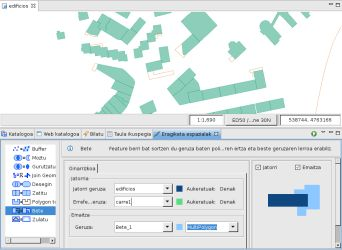
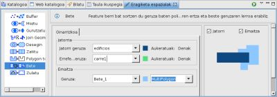
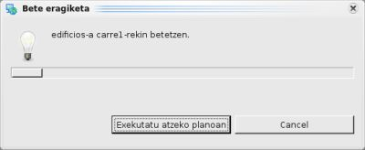

{kind=link}
{kind=link}
{kind=link}

4 irudia. Emaitza Geruza.
Feature berri bat sortzen du geruza baten poligonoaren ertz bat eta beste geruzaren lerroa erabiliz.
Bete eragiketak jatorri geruzaren featureak hartzen ditu eta bigarren geruzako LineString featureak erabiltzen ditu betetzeko.
Bete eragiketaketaren emaitza geruza berri baten, dagoen baten edo aipatutako jatorri geruzan gorde daiteke.
Adibide honetan poligono motako edificios.shp geruzaren eta LineString motako carre1.shp geruzaren artean Bete eragiketa burutuko dugu eta emaitza edificios.shp geruzara gehituko da.

1 Irudia. Eragiketaren aurretik.
Eragiketa Espazialen Bistara goaz, eta Bete aukeratuko dugu Eragiketen menuan.
Bete Eragiketaren aukera espezifikoak agertzen dira.
Eragiketaren sarrerako balioak adierazi behar ditugu, 2 irudian agertzen den bezala:

2 irudia. Sarrerako eta emaitzako geruzak zehaztu.

3 irudia. Aurrerakuntza leihoa.
Eragiketa bukatzen denean, emaitza gordetzeko geruza berri bat sotu bada, jadaneko Marpara automatikoki gehitua izango da.
4 irudiak sortu berri den Geruza (Bete_1) erakusten du Mapari gehitua, Jatorri eta Erreferentzi Geruzen arteko desberditasunak aplikatzearen emaitzako featurearekin.
4 irudia. Emaitza Geruza.